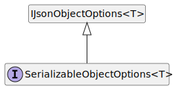

Interface SerializableObjectOptions<T>
beforeSerialization?: string;
initializer?: InitializerCallback<T>;
knownTypes?: Function[];
name?: string;
onDeserialized?: string;
preserveNull?: boolean;
typeHintEmitter?: TypeHintEmitter;
typeResolver?: TypeResolver;
}
Type Parameters
Hierarchy-Diagram
{kind=link}
Legend
 interface
interface
Hierarchy
- IJsonObjectOptions<T>
- SerializableObjectOptions
Properties
Optional before
Optional initializer
Function to call before deserializing and initializing the object, accepting two arguments: (1) sourceObject, an 'Object' instance with all properties already deserialized, and (2) rawSourceObject, a raw 'Object' instance representation of the current object in the serialized JSON (i.e. without deserialized properties).
Optional known
An array of known types to recognize when encountering type-hints.
Optional name
The name used to differentiate between different polymorphic types.
Optional on
The name of a static or instance method to call when deserialization of the object is completed.
Optional preserve
Whether to preserve null in the JSON output. When false it will not emit nor store the property if its value is null. Default: false.
Optional type
A function that will emit a type hint on the resulting JSON. It will override the global typeEmitter.
Optional type
A function that given a source object will resolve the type that should be instantiated. It will override the global type resolver.
The name of a static or instance method to call before the serialization of the typed object is started.